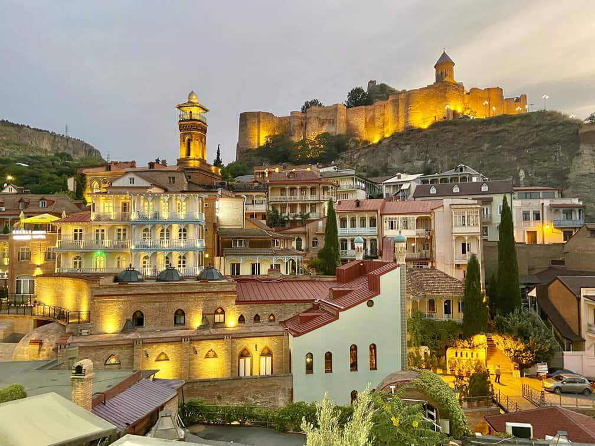

ფეხბურთის ისტორია
ფეხბურთი სათავეს იღებს უძველესი დროიდან ჩინეთში, რომში და საბერძნეთში.
თანამედროვე ფეხბურთის წესები ჩამოყალიბდა ინგლისში 1863 წელს, ინგლისის საფეხბურთო ასოციაციის შექმნით
ფეხბურთის ძირითადი წესები
ამაში მიმდინარეობს 90 წუთის განმავლობაში (2 ტაიმი).
თითო გუნდში 11 მოთამაშეა (მეკარე და 10 მინდვრის მოთამაშე).

მიზანია მეტოქის კარში ბურთის გატანა და გოლების დაგროვება.
მნიშვნელოვანი ტურნირები
UEFA Champions League ევროპის წამყვანი კლუბების შეჯიბრი
კოპა ამერიკა და ევროპის ჩემპიონატი კონტინენტური ტურნირები.
ფეხბურთის ლეგენდები
პელე ბრაზილიელი ვარსკვლავი, რომელმაც 3 მსოფლიო თასი მოიგო.
მარადონა არგენტინელი ფეხბურთელი, ცნობილი 1986 წლის მსოფლიო თასზე შესრულებული „ღმერთის ხელით“.

თანამედროვე ლეგენდები: ლიონელ მესი, კრიშტიანუ რონალდუ.
ქალთა ფეხბურთი
ბოლო წლებში ქალთა ფეხბურთი მნიშვნელოვნად გაიზარდა.
FIFA-ს ქალთა მსოფლიო ჩემპიონატი 1991 წლიდან იმართება.
ფეხბურთის გავლენა საზოგადოებაზე
ფეხბურთი აერთიანებს მილიონობით გულშემატკივარს და სხვადასხვა კულტურას.
მისი გავლენა იგრძნობა ეკონომიკაზე და პოლიტიკაზეც ტურნირები ქმნიან სამუშაო ადგილებს და უწყობენ ხელს ტურიზმს.

ტაქტიკა და სტრატეგიები
ფორმაციები: 4-4-2, 4-3-3 და 3-5-2.
ზოგი გუნდი მჭიდრო დაცვას ანიჭებს უპირატესობას, ზოგი სწრაფ შეტევას.

ტექნოლოგია ფეხბურთში
VAR (Video Assistant Referee) მსაჯთა გადაწყვეტილებების გადამოწმება.
მჭიდრო ანალიზი მონაცემებზე: GPS სენსორები მოთამაშეთა შედეგების შესაფასებლად.
ყველაზე ცნობილი სტადიონები
კამპ ნოუ (ბარსელონა)
უემბლი (ლონდონი)
მარაკანა (რიო-დე-ჟანეირო)


ფეხბურთი მნიშვნელოვანია ჯანსაღი ცხოვრების წესის პოპულარიზაციისთვის ბავშვებისა და მოზარდებისთვის გუნდური მუშაობის სწავლება და სპორტში ჩართულობის გაზრდა